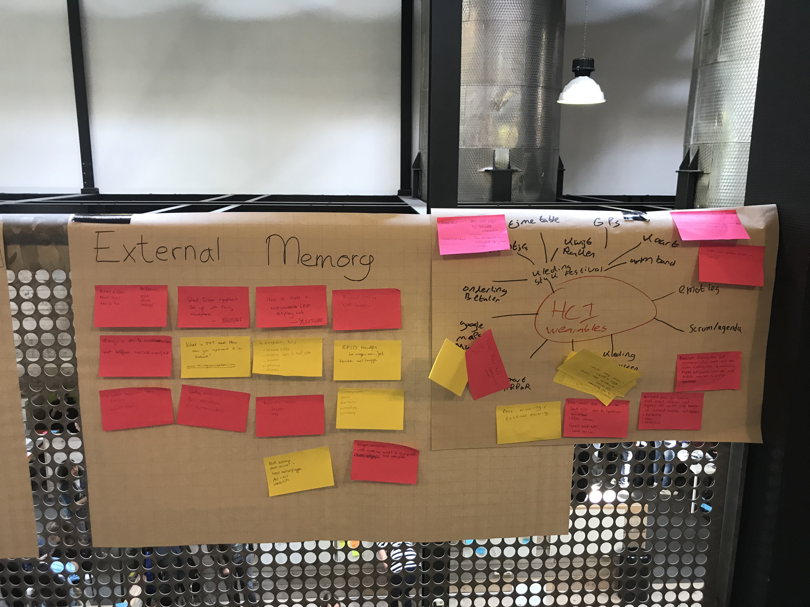
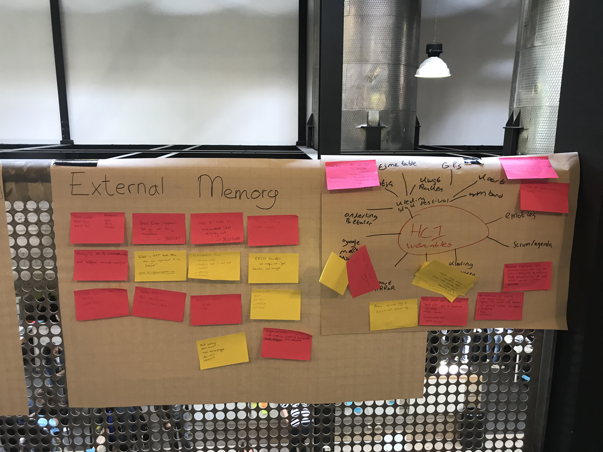

Dag 1 | maandag 4 juni
concepten bedenken
Vandaag was de eerste dag van de HCI week in Zoetermeer. We kregen te horen welk onderwerp je kreeg en gelukkig heb ik het onderwerp gekregen die bovenaan op mijn lijstje staat. Ik ga iets maken voor wearables. Samen met mijn groepsleden Hani, Joey en Sanne gaan wij er een mooi project van maken.
Wij begonnen met brainstormen en begonnen meteen al met allerlei ideeën uit te werken. Een aantal dingen die voorbijkwamen waren een shirt die je aan doet naar een festival met knoppen erop dat je je vrienden kunt zoeken als je ze kwijt bent etc. Dit was vooral ingespeeld op het festival seizoen dat eraan komt. Een ander idee was de silene disco hoed. Dit idee hebben wij heel erg uitgewerkt en waren wij ook erg enthousiast over, maar achteraf is het toch niet helemaal ons idee. Wij willen namelijk een headphones, licht bewegend op geluid emoties toepassen. Wij zijn daarom meteen aan de slag gegaan met de lichtjes op de beat laten weergeven, alleen we hadden niet het juiste led snoer. Wij hebben RGB-led lampjes nodig en dit waren witte.
Nadat wij besloten hebben dit idee toch niet uit te voeren zijn wij opnieuw begonnen met brainstormen. Wat is 'Wearables' voor ons en hier zijn wij verder op in gegaan. Wij zijn van plan om iets te maken wat eigenlijk niet nodig is en toch leuk.


Wij begonnen met brainstormen en begonnen meteen al met allerlei ideeën uit te werken. Een aantal dingen die voorbijkwamen waren een shirt die je aan doet naar een festival met knoppen erop dat je je vrienden kunt zoeken als je ze kwijt bent etc. Dit was vooral ingespeeld op het festival seizoen dat eraan komt. Een ander idee was de silene disco hoed. Dit idee hebben wij heel erg uitgewerkt en waren wij ook erg enthousiast over, maar achteraf is het toch niet helemaal ons idee. Wij willen namelijk een headphones, licht bewegend op geluid emoties toepassen. Wij zijn daarom meteen aan de slag gegaan met de lichtjes op de beat laten weergeven, alleen we hadden niet het juiste led snoer. Wij hebben RGB-led lampjes nodig en dit waren witte.
Nadat wij besloten hebben dit idee toch niet uit te voeren zijn wij opnieuw begonnen met brainstormen. Wat is 'Wearables' voor ons en hier zijn wij verder op in gegaan. Wij zijn van plan om iets te maken wat eigenlijk niet nodig is en toch leuk.
